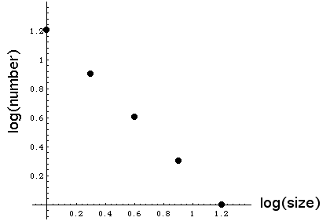

| Here is an arrangement of boxes that appears to be fractal. |
|
| To quantify this, we measure the gaps and discover |
| size | number |
| 16 | 1 |
| 8 | 2 |
| 4 | 4 |
| 2 | 8 |
| 1 | 16 |
|
| A log-log plot reveals a straight line, |
|  |
| hence the power law relation |
| number = 16⋅size-1 |
| Now consider this arrangement of boxes. Does it look fractal? |
|
| The rigid structure of the first example, reminiscent of a
Cantor set, is absent here. |
| However, this set has the same distribution of gaps as the
first. So power law scalings can help reveal fractal patterns. |
| A similar example can be found in
self-similar distributions. |